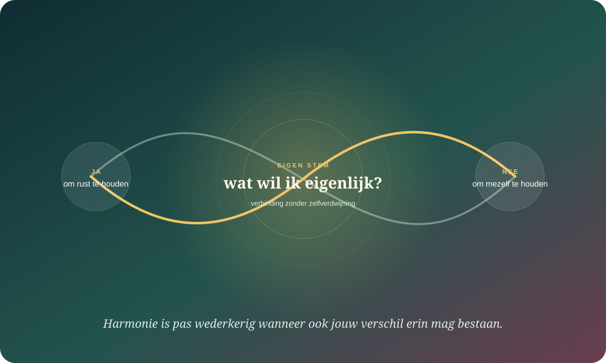

De kern in gewone taal
Pleasen is niet “te lief zijn”. Het is verbinding beschermen door jezelf minder zichtbaar te maken.
Aanpassen is een normale sociale vaardigheid. Het wordt problematisch wanneer instemmen niet meer vrij voelt, wanneer je vooral afwijzing probeert te voorkomen of wanneer anderen jouw voorkeur nauwelijks nog hoeven te ontmoeten. De wetenschappelijke termen liggen verspreid over zelfstilte, afwijzingsgevoeligheid, conflictvermijding, accommodatie en machtsverschillen. “People pleaser” is geen diagnose.
Een rustig “laat maar” uit keuze is iets anders dan zwijgen omdat verschil gevaarlijk voelt.
Je kunt in de ene relatie vrij spreken en in een andere voortdurend scannen.
Rust is niet wederkerig wanneer slechts één persoon de spanning inslikt.
Het internet maakt één figuur. Onderzoek ziet meerdere processen.
De populaire pleaser wordt vaak voorgesteld als iemand met één verborgen oorzaak. Dat is te eenvoudig. Hetzelfde gedrag — meegaan, helpen, glimlachen, stilvallen — kan voortkomen uit warmte, cultuur, beroepsrol, vermoeidheid, afhankelijkheid, afwijzingsverwachting of reëel gevaar.
Zelfstilte
Ik houd een relevante gedachte tegen.
Niet elk stil moment is zelfstilte. Het gaat om zelfexpressie onderdrukken om de relatie, veiligheid of goedkeuring te bewaren.
Afwijzingsgevoeligheid
Mijn systeem verwacht sneller afwijzing.
Die verwachting kan onduidelijke signalen bedreigender maken, maar ontstaat ook in werkelijk afwijzende omgevingen.
Accommodatie
Ik pas mij aan voor een gezamenlijk doel.
Dat kan volwassen samenwerking zijn wanneer het vrijwillig, begrensd en wederkerig blijft.
Conflictvermijding
Ik voorkom de spanning van verschil.
Dat kan tijd kopen. Als uitstel permanent wordt, verdwijnen informatie, herstel en onderhandeling.
Kritische grens: “pleasen” mag niet worden gebruikt om slachtoffers verantwoordelijk te maken voor dwang of geweld. In onveilige situaties kan meebewegen een verstandige bescherming zijn.
Vraag niet alleen “waarom doe ik dit?” Vraag ook “bij wie, wanneer en tegen welke prijs?”

Wat doe ik zichtbaar?
Instemmen, extra zorgen, verontschuldigen, verzachten, lachen, snel oplossen of mijn voorkeur niet noemen.
Wat verwacht ik dat er anders gebeurt?
Boosheid, teleurstelling, afstand, gezichtsverlies, schuld of het oordeel dat ik lastig ben.
Wordt verschil hier ontvangen?
Een patroon zit niet uitsluitend “in mij”; reacties van de ander leren mee wat veilig of lonend is.
Wat kan ik werkelijk riskeren?
Financiën, status, zorgafhankelijkheid, racisme, gendernormen en geweld veranderen de prijs van spreken.
Van “het inschikkelijke type” naar selectieve zelfstilte.
“Jij bent nu eenmaal een pleaser.”
Oudere persoonlijkheids- en codependencymodellen zochten één karakterstructuur of gezinsrol. Dat gaf herkenning, maar maakte context, cultuur en veranderlijkheid snel onzichtbaar.
“Jouw stem verandert per relatie en situatie.”
Recent onderzoek benadert zelfstilte vaker als contextafhankelijk. Een studie uit 2026 vond bij jonge volwassenen duidelijke verschillen tussen relaties, waarbij ervaren veiligheid de sterkste scheidslijn was.
Niet iedere stilte is verlies. De beslissende vraag is: kon je ook spreken?
Je hoeft geen denkfout te corrigeren wanneer je omgeving werkelijk straft.
Een meta-analyse uit 2023 koppelde afwijzingsgevoeligheid gemiddeld aan minder tevredenheid en nabijheid, meer conflict, jaloezie en zelfstilte in romantische relaties. Maar zulke verbanden bewijzen niet dat de verwachting louter “in het hoofd” zit. Recente syntheses benadrukken dat zelfstilte hoger kan zijn in contexten met minder wederkerigheid, lagere macht, seksisme, racisme of misbruik.
Onderzoek zowel de voorspelling — “iedere nee leidt tot afwijzing” — als de omgeving — “wat doet deze persoon werkelijk wanneer ik verschil toon?” Zelfontwikkeling zonder machtsanalyse wordt snel zelfbeschuldiging.
Wie nooit lastig wil zijn, wordt voor anderen soms onmogelijk om werkelijk te kennen.
Voortdurend accommoderen kan tijdelijk nabijheid beschermen, maar laat de ander raden naar jouw grenzen. Experimenteel ouder onderzoek liet bovendien zien dat zelfstilte vóór afwijzing bij sommige vrouwen samenhing met meer vijandigheid erna. Dat maakt pleasen niet manipulatief; het toont hoe ingeslikte investering later als een onzichtbare rekening kan terugkeren.
Wrok
“Na alles wat ik deed…”
Een niet-uitgesproken ruilcontract kan ontstaan: ik zorg, dus jij zou mijn behoefte vanzelf moeten zien.
Onleesbaarheid
De ander krijgt geen betrouwbare kaart.
Wanneer ieder antwoord wordt aangepast, kan nabijheid groeien rond een versie die jij niet volhoudt.
Overbelasting
Een snelle ja verplaatst de kost.
De spanning verdwijnt uit het gesprek en verschijnt later in tijdsdruk, uitputting of vermijding.
Scheve wederkerigheid
Wie draagt de relatie?
Een patroon blijft langer bestaan wanneer jouw overfunctie het onderfunctioneren van een ander opvangt.
Vier hedendaagse vragen die het dossier scherper maken.
Keri L. Frick
Wat weten drie decennia zelfstilte-onderzoek werkelijk?
Brengt resultaten samen en benadrukt cultuur, macht, wederkerigheid en methodologische grenzen.
Christin Grothaus
Waarom spreek ik hier wel en daar niet?
Onderzoekt zelfstilte binnen verschillende relatiecontexten in plaats van alleen tussen “types” mensen.
Gery Karantzas
Hoe werkt afwijzingsgevoeligheid tussen twee partners?
Bekijkt actor- én partnereffecten en voorkomt dat relaties tot één individuele trek worden gereduceerd.
Netta Weinstein
Is stilte gekozen of afgedwongen?
Gebruikt zelfdeterminatietheorie om motieven voor stilte te onderscheiden, niet alleen het zichtbare gedrag.
Oefen één eerlijk verschil dat de relatie kan dragen.
Vertraag je automatische ja
Zeg: “Ik wil even kijken wat haalbaar is. Ik kom er straks op terug.” Tijd maakt keuze opnieuw zichtbaar.
Noem een voorkeur zonder verdediging
Begin klein: “Ik heb liever donderdag.” Voeg niet meteen vijf redenen toe die jouw voorkeur moeten rechtvaardigen.
Observeer de reactie, niet alleen je angst
Wordt er onderhandeld, gepruild, gestraft, geluisterd of gerespecteerd? Dat is informatie over de relatie.
Maak geen universele conclusie
Eén slechte reactie bewijst niet dat iedere grens gevaarlijk is. Eén goede reactie maakt een onveilig patroon evenmin ongedaan.
Maak één onzichtbaar contract zichtbaar.
Van automatische harmonie naar bewuste afstemming
Schrijf niet wat netjes klinkt. Schrijf wat je normaal pas uren later beseft.
Er wordt niets verstuurd. Je antwoorden blijven alleen in deze browser bewaard.
Waarop dit dossier steunt.
- Narratieve review · 2025Frick e.a. — Advancing Research on Self-Silencing and Depression
Drie decennia onderzoek, met nadruk op context, macht en hiaten.
- Kwalitatieve studie · 2026Grothaus — When Silence Is Selective
Zelfstilte verschilde binnen personen per relatie; ervaren veiligheid was een belangrijke scheidslijn.
- Meta-analyse · 2023Gao e.a. — Rejection sensitivity and romantic relationships
Synthese van verbanden met tevredenheid, conflict, zelfstilte en macht.
- Koppelstudie · 2024Karantzas e.a. — Predicting relationship outcomes from rejection sensitivity
Test actor- en partnereffecten binnen koppels.
- Vier studies · 2024Weinstein e.a. — Intimate sounds of silence
Laat zien waarom het motief achter stilte belangrijker kan zijn dan stilte alleen.
- Experiment · 2013Ayduk e.a. — Self-silencing accommodations and post-rejection hostility
Oudere experimentele toets van ingeslikte aanpassing en reactie op afwijzing.
- Longitudinaal · 2023Norona e.a. — The long arm of rejection sensitivity
Replicatie met een genuanceerd patroon van afstand, zelfverberging en spanning.